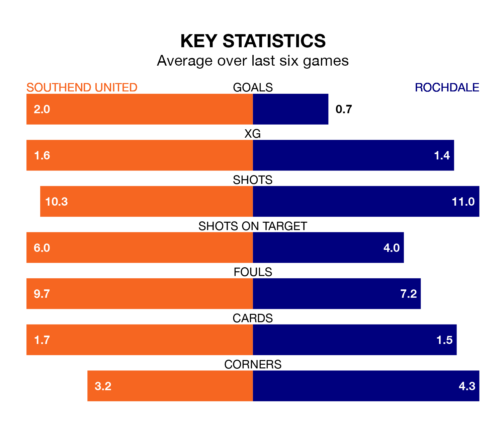

Southend United are heavy favourites to keep all three points at home in Saturday lunchtime's kick-off against Rochdale.
The Shrimpers, who sit fourth in the National League with 45 games played, are priced at 1.7 to seal victory at Roots Hall.
Sitting seven places and 16 points behind them in the table, Rochdale are 4.5 to win with *Betting Company*, while the draw is at 3.9.
In the last 10 years, Southend and Rochdale have played each other on 10 occasions. Southend won one of them, Rochdale five, and they drew four times.
On average, the Shrimpers scored 0.8 goals and the Dale 1.8 in those matches.
Their last meeting was on September 30, when they played out a 2-2 draw.
With 69 goals in 45 games so far this season, Southend are scoring at the league's average rate with 1.5 goals per game. And they are conceding fewer than average, letting in 43 goals at a rate of 1.0 per game.
Rochdale are also average scorers, with 1.5 goals per game. They have conceded 1.4 goals per game.
United are in good form in the National League, with four wins and two draws from their last six games.
With a win and four draws over that period, the Dale's form is much worse – they have taken seven points from 18, compared to the Shrimpers' 14.
Southend's last match was on Saturday, a 2-0 win against Fylde, with Danny Waldron and Harry Cardwell getting the goals for the Shrimpers.
Rochdale drew 0-0 with Boreham Wood last time out, on Tuesday.
Updated: 15:40 (UTC), 18/04/24